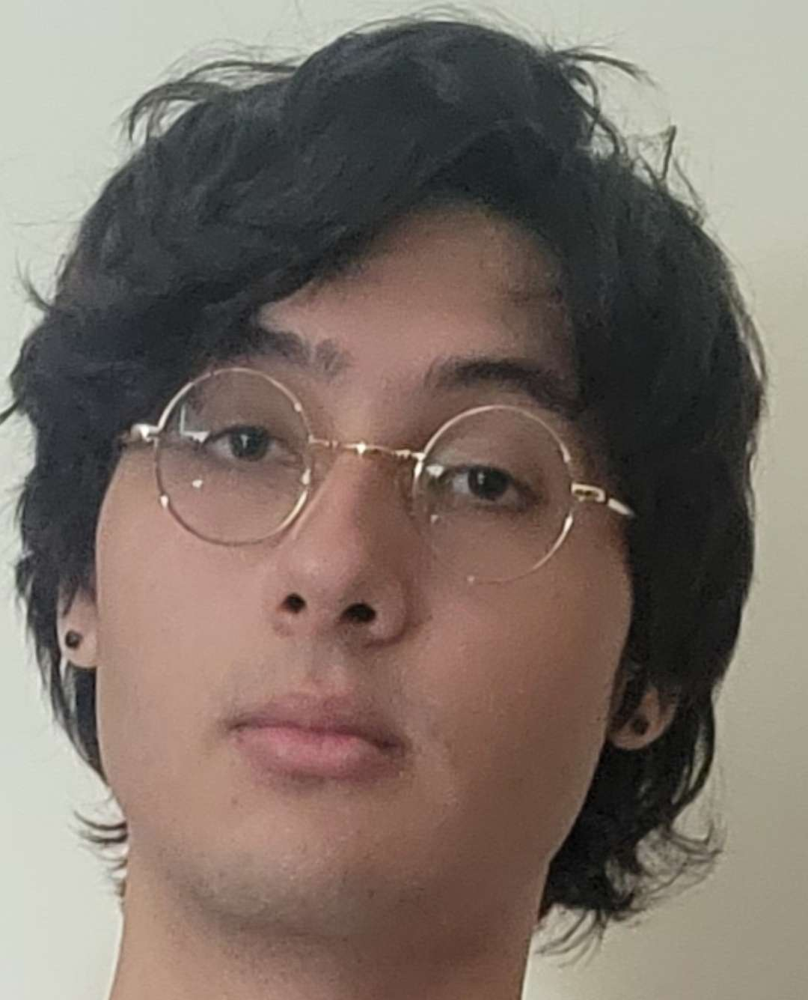

Hey! I am a fourth-year undergraduate math student at MIT from Puerto Rico. I am interested in Algebraic Topology. You can reach me at caalvara(at)mit.edu.
Papers
Families of degenerating Poincaré-Einstein metrics on R^4: This paper was the result of a UROP under Professor Tristan Ozuch along with Daniel Santiago.
Dynamical Stability of Translators Under Mean Curvature Flow: This paper was the result of SPUR+. The project was proposed by Professor William Minicozzi and Tang-Kai Lee mentored me along with Ayodeji Linblad.
Expository Notes
Fourier Transform on LCA Groups: This was the final project for 18.104 joint with William Hegelmeyer. The seminar topic was Fourier Analysis.